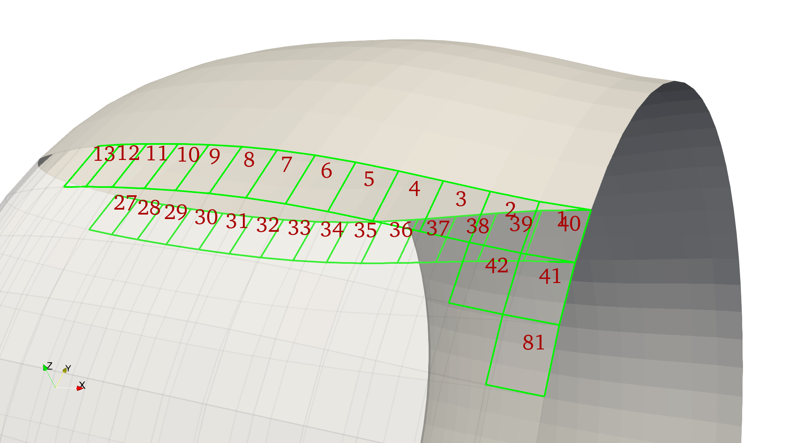

Surface of Revolution Method
Following the concept of bodies of revolution where a contour is revolved around an axis, this method generates the surface of such revolution.
GeometricTools.surface_revolution — Functionsurface_revolution(profile, thetaNDIVS; loop_dim=0, axis_angle=0, low_a=0, up_a=360, save_path=nothing, paraview=true, file_name="myrev")
Receives a contour to revolve around an axis generating a surface of revolution.
ARGUMENTS
profile::Array{Float64,2}: Contour to revolve. These are two- dimensional points in the YZ-plane that will get revolve around the Z-axis.thetaNDIVS::Int64: Number of angle-sections (cells) in the revolution.
OPTIONAL ARGUMENTS
loop_dim::Int64=0: Whether to loop any dimension of the parametric grid.axis_angle::Float64=0: Tilting angle (deg) about the Z-axis to revolve the contour.low_a::Float64=0: Lower bound of angle (deg) of revolution.up_a::Float64=0: Upper bound of angle (deg) of revolution.
Node and Cell Indexing
Standard input:
- Contour drawn in the $+y$ quadrants following the Selig airfoil format (starting at the trailing edge, progressing to the leading edge along the upper surface, and returning to the trailing edge along the lower surface).
- The contour can be a closed curve describing the a toroidal cross section (as in the case of the duct), or an open contour along the $y=0$ axis describing the half surface of a cylindrical body of revolution (as in the case of the centerbody).
Following these guidelines, GeometricTools.surface_revolution returns a revolved quadrilateral surface with the following node and cell indexing pattern:
|
|
|
|---|---|
|
|
|
|---|---|
|  |
|
|
|
|
|---|---|---|
OBSERVATION: The following examples show how to use the revolution method directly from the GeometricTools package. In order to use this grid in the definition of a body, the quadrilateral panels must by transformed into triangular panels through
GeometricTools.GridTriangleSurface(orggrid, dimsplit).
Example — Rotor hub
First, we need a profile to revolve consisting of a collection of points. This can be predefined and read as a csv file (for example), or defined programmatically. Here we show how to define the contour programmatically:
import PyPlot as plt
Rhub = 0.375 * 0.02542 # (m) radius of hub
Rinn = Rhub / 2 # (m) inner hole radius
Rsec1 = Rinn # (m) radius of first hole
Rsec2 = 3 / 1000 # (m) radius of second hole
Thub = Rhub # (m) thickness of hub
dsec1 = 3 / 1000 # (m) depth of first hole
Rfillet = 2 / 1000 # (m) Fillet radius
Nfillet = 30 # Points along fillet
Cfillet = [Rhub, Thub] .- Rfillet # Center of fillet
points_fillet = [Cfillet .+ Rfillet * [sin(a), cos(a)]
for a in range(0, stop=pi/2, length=Nfillet)]
points = hcat(
[Rsec2, Thub-dsec1],
[Rsec1, Thub-dsec1],
[Rsec1, Thub],
points_fillet...,
[Rhub, 0],
[Rsec1, 0],
[Rsec1, dsec1],
[Rsec2, dsec1],
[Rsec2, Thub-dsec1]
)'
x = [points[i,1] for i in 1:size(points,1)]
y = [points[i,2] for i in 1:size(points,1)]
plt.figure(figsize=[5,5]*2/3)
plt.plot(x,y, "--ok")
plt.plot([Cfillet[1]], [Cfillet[2]], "xr")
plt.xlim([0, Rhub*1.25])
plt.ylim([-Rhub*0.125, Rhub*1.125]);
plt.savefig(joinpath(img_path, "geometry-hubcontour00.png"), transparent=true, dpi=300)import FLOWPanel as pnl
save_path = "./"
file_name = "hub00"
thetaNDIVS = 180 # Number of angular sections
loop_dim = 1 # Loops the parametric grid
# Creates body of revolution
grid = pnl.gt.surface_revolution(points, thetaNDIVS; loop_dim=loop_dim)
# Save vtk and call paraview
pnl.gt.save(grid, file_name; path=save_path, format="vtk")
run(`paraview --data=$(joinpath(save_path, file_name)).vtk`)
Example — Tilted revolution
By using the optional argument axis_angle we can tilt the angle about which to do the revolution. To exemplify this, using the previous contour we will tilting the axis by $90^\circ$ about the $z$-axis, resulting in a revolution about the $y$-axis:
axis_angle = 90 # Axis tilting
grid = pnl.gt.surface_revolution(points, thetaNDIVS;
loop_dim=loop_dim,
axis_angle=axis_angle)
# Save vtk and call paraview
pnl.gt.save(grid, file_name; path=save_path, format="vtk")
run(`paraview --data=$(joinpath(save_path, file_name)).vtk`)
And here is what we get by tilting the axis by $45^\circ$ about the $z$-axis:
axis_angle = 45 # Axis tilting
grid = pnl.gt.surface_revolution(points, thetaNDIVS;
loop_dim=loop_dim,
axis_angle=axis_angle)
# Save vtk and call paraview
pnl.gt.save(grid, file_name; path=save_path, format="vtk")
run(`paraview --data=$(joinpath(save_path, file_name)).vtk`)
Example — Incomplete revolution
Using the arguments low_a and up_a we can set the lower and upper bound angles of the revolution to create an incomplete body of revolution:
thetaNDIVS = 45 # Number of angular sections
loop_dim = 1 # Loops the parametric grid
low_a = -45 # Lower bound of revolution angle
up_a = 45 # Upper bound of revolution angle
grid = pnl.gt.surface_revolution(points, thetaNDIVS;
loop_dim=loop_dim,
low_a=low_a, up_a=up_a)
# Save vtk and call paraview
pnl.gt.save(grid, file_name; path=save_path, format="vtk")
run(`paraview --data=$(joinpath(save_path, file_name)).vtk`)